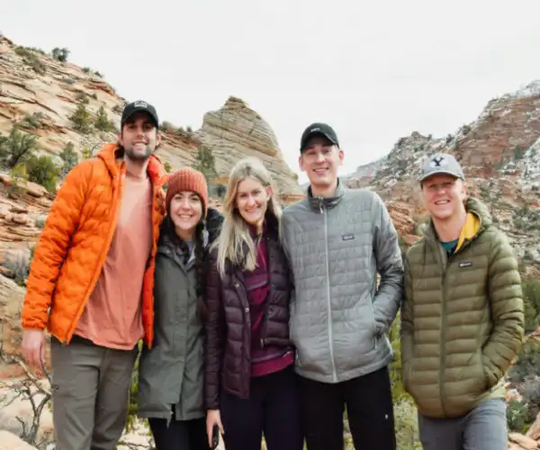
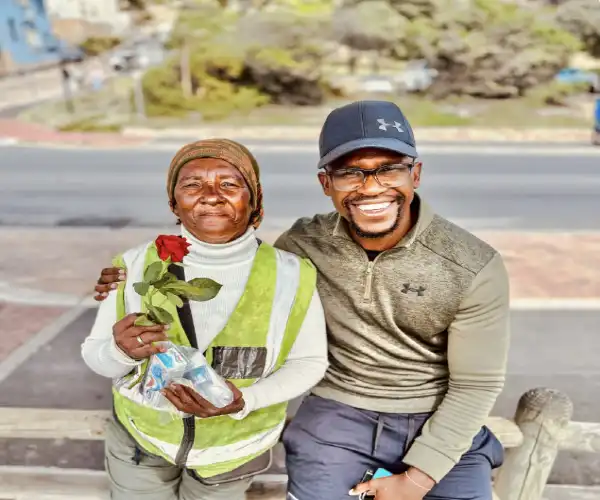

Join our mission to equip people with skills to overcome homelessness
Join our mission to equip people with skills to overcome homelessness
Homeless
Imagine waking up outside on the cold ground, instead of in a warm cozy bed. Even worse, imagine rummaging through a trash can for your next meal not knowing what you will find. People that are homeless know these images all too well. Being homeless is a lifestyle that many people face today, but your community can help. Helping the homeless out can be an easy task, but also a rewarding task as well. Anything given to homeless people is appreciated. From a quarter to a bottle of water, these are items that people need to survive. According to statistics, nearly 200,000 people in South Africa are homeless. This ranges from people with disabilities to our Veterans as well. 10% of the population are considered chronically homeless. This occurs when an individual has a disability and has been homeless for a year or longer. As for our Veterans, nearly 5% of them fit into the homeless category and the number continues to rise. It is uncomforting to think that the person you pass on the street could have been a man or women who fought for the freedom of this country a year, or even months earlier. Don’t treat the homeless as if they were invisible. Acknowledge them by speaking and showing them respect regardless of what they may look like. There are different ways to help like donating non- perishable items, clothing, coats, blankets, working in food banks, getting job fairs to visit the community or even just passing out a bottle of water. We could also provide care packages that include shampoo, body wash, deodorant, a hairbrush, toothpaste, a toothbrush and five dollars for them to buy something of their choice or even just treating them to a meal. These are just few of many items that we could donate to help the shelters.

